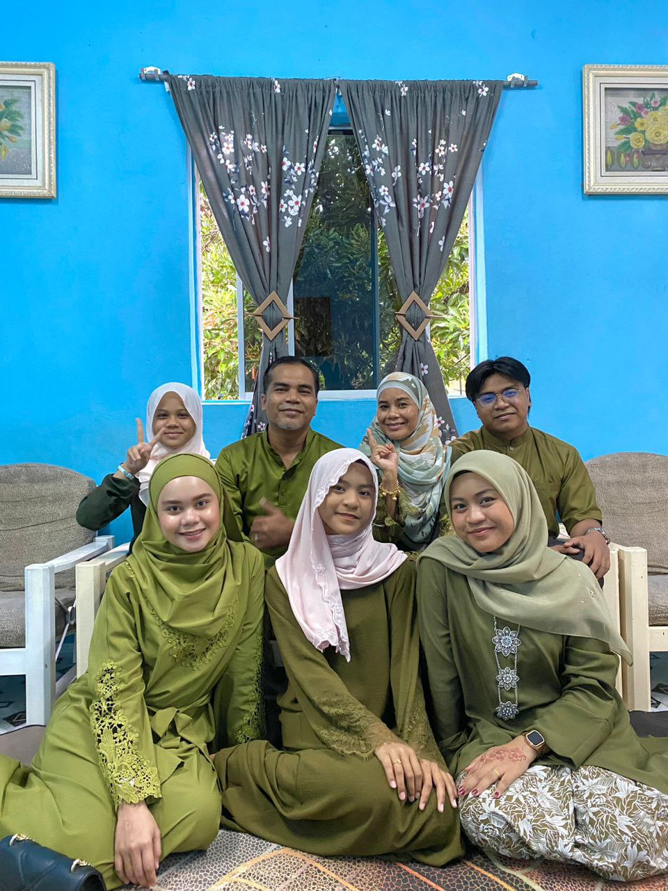

Everythings here is all about Muhammad Bin Mohd Zaki and information provided by himself
|
|
|
|
|
|
My Precious Parent |
||

|  | |
Mohd Zaki Bin Saad is my father, and Kodiang, Kedah, is his birthplace.
On June 18, 1974, he was born. My father was in the navy and is currently
employed as a WCE patrol. There's never been a better father than him. He
consistently shows his kids his undivided attention. My father was never
unfair to his kids. Next, my father is skilled at electrical work. | ||
My Siblings |
||||
Nurhaziera Najwa Binti Mohd Zaki is my sister. She was born at Perak
in year 2000, 16 July. She 23 years old in this year. She is a graduate of
UiTM student in Segamat, Johor. Now, she continuing her degree at Kota Bahru,
Kelantan. She is already engage with her love for about a year now. Next,
my little sister which is Nurezrin Aliya Binti Mohd Zaki. She was born in
year 2006, 12 December at Hospital Seri Manjung. Now, she study in SMK KDSK,
Perak. She always liked to play with her phone most of the time. She is a
quite person in her school and but still has friends. Amomng us, she is a
crazy person, always screaming everyday XD.
| ||||